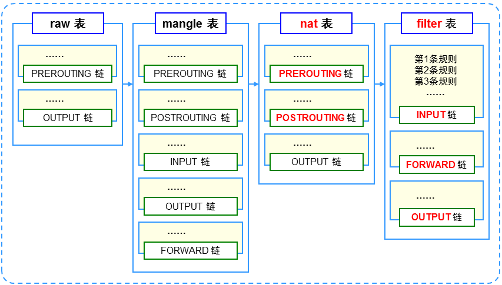

iptables：位于/sbin/iptables，用来管理防火墙规则的工具称为Linux防火墙的“用户态”。
规则表：
表的作用：容纳各种规则链
表的划分依据：防火墙规则的作用相似
默认包括4个规则表：
raw表：确定是否对该数据包进行状态跟踪
mangle表：为数据包设置标记
nat表：修改数据包中的源、目标IP地址或端口
filter表：确定是否放行该数据包（过滤）
规则链：
规则的作用：对数据包进行过滤或处理
链的作用：容纳各种防火墙规则
链的分类依据：处理数据包的不同时机
默认包括5种规则链
PREROUTING：在进行路由选择前处理数据包
INPUT：处理入站数据包
OUPUT：处理出站数据包
FORWARD：处理转发数据包
POSTROUTING：在进行路由选择后处理数据包

规则表之间的顺序
raw---mangle---nat---filter
规则链之间的顺序
入站：PREROUTING、INPUT
出站：OUTPUT、POSTROUTING
转发：PREROUTING、FORWARD、POSTROUTING
规则链内的匹配顺序
按顺序自上而下依次检查，匹配即停止（LOG策略除外）
若找不到相匹配的规则，则按该链的默认策略处理
语法构成
iptables [-t 表名] 选项 [链名] [条件] [-j 控制类型]
注意事项：
不指定表名时，默认指filter表
不指定链名时，默认指表内的所有链
除非设置链的默认策略，否则必须指定匹配条件
选项、链名、控制类型、使用大写字母，其余均为小写
常见控制类型：
ACCEPT：允许通过
DROP：直接丢弃，不给出任何回应
REJECT：拒绝通过，必要时会给出提示
LOG：记录日志信息，然后转给下一条规则继续匹配
添加新规则：
-A：在链的末尾追加一条规则
-I：在链的开头（或指定序号）插入一条规则
例：
# iptables -t filter -A INPUT -p tcp -j ACCEPT
# iptables -I INPUT -p udp -j ACCEPT
# iptables -I INPUT 2 -p icmp -j ACCEPT
查看规则列表
-L：列出所有的规则条目
-n：以数字形式显示地址、端口等信息
-v：以更详细方式显示规则信息
--line-numbers：查看规则时，显示规则的序号
例：# iptables -L INPUT --line-numbers
删除、清空规则
-D：删除链内指定序号（或内容）的一条规则
-F：清空所有的规则
# iptables -D INPUT 3 #删除INPUT链中第3条规则
设置默认策略
-P：为指定的链设置默认规则
例：# iptables -t filter -P FORWARD DROP
# iptables -P OUTPUT ACCEPT

通用匹配
可直接使用，不依赖于其他条件或扩展
包括网络协议、IP地址、网络接口条件
隐含匹配
要求以特定的协议匹配作为前提
包括端口、TCP标记、ICMP类型等条件
显式匹配
要求以“-m 扩展模块”的形式明确指出类型
包括多端口、MAC地址、IP范围、数据包状态等条件
常见的通用匹配条件
协议匹配：-p 协议名
地址匹配：-s 源地址、-d 目的地址
接口匹配：-i 入站网卡、-o 出站网卡
例：# iptables -A FORWARD -s 192.168.1.11 -j REJECT
# iptables -I INPUT -s 10.20.30.0/24 -j DROP
# iptables -I INPUT -p icmp -j DROP
# iptables -A FORWARD -p ! icmp -j REJECT
# iptables -A INPUT -i eth1 -s 192.168.0.0/16 -j DROP
# iptables -A INPUT -i eth1 -s 10.0.0.0/8 -j DROP
# iptables -A INPUT -i eth1 -s 172.16.0.0/12 -j DROP
常用的隐含匹配条件
端口匹配：--sport 源端口、--dport 目的端口
ICMP类型匹配：--icmp-type ICMP类型
例：# iptables -A FORWARD -s 192.168.4.0/24 -p udp --dport 53 -j ACCEPT
# iptables -A INPUT -p tcp --dport 20:21 -j ACCEPT
# iptables -A INPUT -p icmp --icmp-type 8 -j DROP
# iptables -A INPUT -p icmp --icmp-type 0 -j ACCEPT
# iptables -A INPUT -p icmp --icmp-type 3 -j ACCEPT
# iptables -A INPUT -p icmp -j DROP
常用的显式匹配条件
多端口匹配：-m multiport --sport 源端口列表
-m multiport --dport 目的端口列表
IP范围匹配：-m iprange --src-range IP范围
MAC地址匹配：-m mac --mac-source MAC地址
状态匹配：-m state --state 连接状态
例：# iptables -A INPUT -p tcp -m multiport --dport 25,80,110,143 -j ACCEPT
# iptables -A FORWARD -p tcp -m iprange --src-range 192.168.4.21-192.168.4.28 -j ACCEPT
# iptables -A INPUT -m mac --mac-source 00:0C:29:C0:55:3F -j DROP
# iptables -I INPUT -p tcp -m multiport --dport 80 -j ACCEPT
# iptabes -I INPUT -p tcp -m state --state ESTABLISHED,RELATED -j ACCEPT

SNAT策略的典型应用环境
局域网主机共享单个公网IP地址接入Internet
SNAT策略的原理
源地址转换，Source Network Address Translation
修改数据包的源地址

前提条件
局域网的web服务器能够访问Ineternet
网关的外网IP地址有正确的DNS解析记录
Linux网关支持IP路由转发
实现方法
编写DNAT转换规则
# iptabes -t nat -A PREROUTING -i eth0 -d 218.29.30.31 -p tcp --dport 80 -j DNAT --to-destination 192.168.1.6
导出（备份）规则
iptables-save工具，可结合重定向输出保存到指定文件
导入（还原）规则
iptables-restore工具，可结合重定向输入指定规则来源
iptables服务
脚本位置：/etc/init.d/iptables
规则文件位置：/etc/sysconfig/iptables